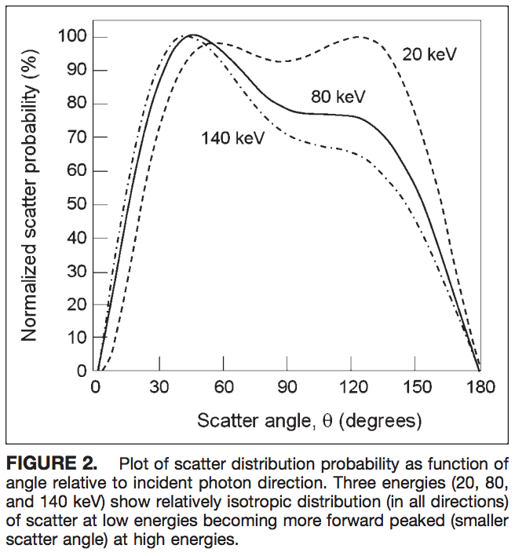

Radiation Physics
Beam Qualifier
kV
→ HVL
MV
→ TPR
20, 10
Material Resembling Patient
10 cm perspex
baby
20 cm perspex
normal adult
30 cm perspex
thick adult
Fluoroscope XR Tube
Usually operate at P-A position
lower operator dose
mainly phantom scattering
fluoro mode uses kV range x-ray
scattering not mainly in forward direction

[1]
[1] Seibert J, Boone J. (2005). X-Ray Imaging Physics for Nuclear Medicine Technologists. Part 2: X-Ray Interactions and Image Formation. Journal of nuclear medicine technology. 33. 3-18.